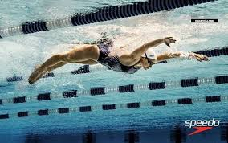

The butterfly stroke is one of the most difficult swimming strokes. It is sometimes referred to as "Fly" for short.
Although it is the second fastest stroke when done properly by a skilled athlete, it requires a very exact technique, strength and rhythm. It does requires a lot of practice to perfect it, but when you have it right, it is one of the most rewarding, respected and aesthetically pleasing swimming styles currently used in competition.
Being able to execute a good butterfly stroke is the hallmark of a true competitive swimmer.
The butterfly (colloquially shortened to the fly) is a swimming stroke swum on the chest, with both arms moving symmetrically, accompanied by the butterfly kick (also known as the "dolphin kick").
While other styles like the breaststroke, front crawl, or backstroke can be swum adequately by beginners, the butterfly is a more difficult stroke that requires good technique as well as strong muscles. It is the newest swimming style swum in competition, first swum in 1933 and originating out of the breaststroke.